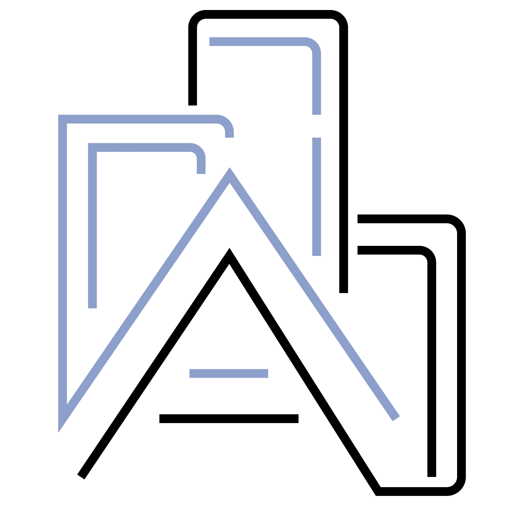

autk-plot
Provenance: select regions in any chart or on the map, and every linked chart paints in aqua only the part of its marks they produce, or with avg the statistic of the selection (the map shows the selected regions in blue)
Double-click to select

Provenance: select regions in any chart or on the map, and every linked chart paints in aqua only the part of its marks they produce, or with avg the statistic of the selection (the map shows the selected regions in blue)